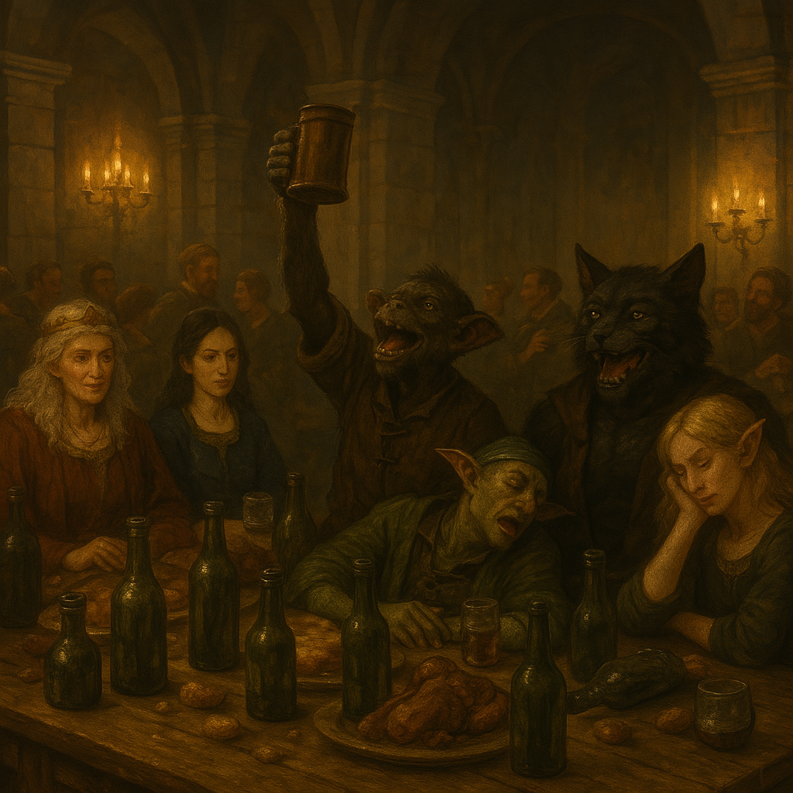

Chapter 1: The Mine
Dragon’s Orb

Dragon’s Orb
15021.12.10
克里歐門王國首都歐倫市，王國的宮殿內，熱鬧的晚宴上，外地來的冒險者們桌上擺滿了空酒瓶。在現任女王 Marva 和他的女兒 Uma 公主的款待下，冒險者們和前來參與的賓客們各個吃飽喝足。
夢想完成「大幹一票」儀式的狗頭人 Sigom、愛耍酷的荒咬薄刃、身材彪悍的黑毛貓人 Aheni，以及此時已經酩酊大醉的妖精 Titania，在這充滿矮人的宴會廳顯得格格不入，但此時他們是宴會的焦點。雖然喝醉了的他們已經不記得女王的指示，但是隔天，他們被指派前往一座礦脈，去尋找一件寶物。
在女王的安排下，四名冒險者住進了王宮二樓的兩間雙人房。
15021.12.11
一早醒來，冒險者們的房門被重重的敲擊。一名矮人催促著冒險者們趕緊出發。這名名為 Zach 的矮人是他們這次任務的嚮導。冒險者們連離開房間都花了不少時間，不耐煩的 Zach 連早餐都不讓冒險者們吃，便把他們趕上馬車，準備出發。
馬車上，Zach 翻開通往後車廂的座椅，一個機器人便翻身而出。Zach 介紹這名機器人，名為 BoBo-V，是他的夥伴，這次出任務也會協助帶領大家在礦脈內前進。接著，Zach 也從倉庫番出了不少啤酒，分給冒險者們。
在冒險者們的詢問下，Zach 和 BoBo-V 簡單說明了這次的任務，是要從礦脈內帶回一件寶物：Dragon’s Orb。
天色漸暗，馬車終於停在礦脈外。大家在礦脈口簡單吃點東西後，便進到礦脈內。BoBo-V 走在前頭，似乎對於裡面的環境十分清楚，遇到路口便直接轉彎。然而，走到其中一個路口時，卻突然無法判斷該走哪一側。殿後的 Zach 繞到最前面，最終選擇了左轉，而 BoBo-V 則改為殿後。
其中一處岔路口，Zach 向右轉，但走在第二的 Aheni 的直覺告訴他應該要向左走才對，況且，一路喝酒的 Zach 看起來判斷力也不太好。Aheni 想向走在最後的 BoBo-V 確認，卻發現 BoBo-V 似乎故障了。最後，Aheni 決定向左走。不久後，跟隨著 Aheni 的眾人聽見了後方傳來了慘叫聲。回頭，大家發現 Zach 竟然掉入了陷阱。努力拉出後，發現陷阱內的長矛已刺入了 Zach 的身體內，他已失去了生命跡象。荒咬薄刃翻了翻 Zach 的衣服，找到了一張紙條，上面有他看不懂的文字，以及畫了一顆蛋：淡淡的藍色，上面有著紫色的紋路。在 Sigom 的解讀下，這是龍語，寫著「布萊茲大人」。
眾人苦惱著，此時 BoBo-V 卻突然恢復正常，並繞到最前面，要為大家帶路。然而，BoBo-V 走了好幾個小時，Sigom 卻發現看見了自己丟在地上作為記號的碎骨頭—BoBo-V 似乎在重複相同的道路。冒險者們決定先暫時停下來，讓 BoBo-V 繼續繞，反正如果他一直在重複相同的路徑，肯定也會繞回來的。同時，Sigom 也聞到了這裡除了他們與 BoBo-V 外，還有其他生物的味道，而那似乎是他所熟悉的生物：龍。
過了超過預期的時間，冒險者們發現 BoBo-V 竟然沒有再次出現，於是決定繼續往前。憑著冒險者們的直覺，他們選擇了和之前不同的岔路，走了一陣子，似乎聽見了前方有聲響。等待後，他們發現似乎是 BoBo-V 朝著他們走了過來。在 BoBo-V 的解釋後，大家還是跟著他繼續前進了。然而，這次 BoBo-V 走的速度有點快，大家要趕上十分辛苦。
一段時間後，除了 Sigom 外，大家已經跟不太上了。Sigom 則刻意和 BoBo-V 保持一點距離，以偷偷觀察他的行為。他聽見了 BoBo-V 嘴裡似乎碎念著什麼，但是他聽不懂。BoBo-V 進入了一個圓形的廣場，停在廣場的另一端。Sigom 躲在廣場邊緣偷看，其他冒險者則在外頭的長廊等待。接著，Sigom 看見 BoBo-V 前方黑暗的空間亮起來一雙眼，一頭成年藍龍飛了出來，鑽過 Sigom 正上方的門口，飛越長廊，停在其他冒險者背後。藍龍發出了一陣聲響，但冒險者們完全聽不懂。接著，在一陣光芒下，藍龍化身成了一名身著藍裝的藍眼女子，用著普通語，叫冒險者們通通進到廣場去。
在藍龍飛向長廊時，Sigom 看見了原本藍龍所處的位置，有成堆的龍蛋—和荒咬薄刃發現的紙條上畫得一模一樣。同時，BoBo-V 伸長了他的機械手臂，取出了一顆蛋，置於他的頭上，但竟然滑順的融入了他的身子，原本人形的 BoBo-V 此刻竟產生了變化，除了身高變高、身外披了一層淺藍色帶有紫色斑紋的皮膚外，背後也長出了一對翅膀。Sigom 詢問 BoBo-V 這是怎麼回事，BoBo-V 只回應了自己現在已經進化成了 BoBo-W，便展翅飛去，穿過了長廊、冒險者與藍龍，消失了。
在藍龍的要求下，其他冒險者們也回到了廣場。藍龍向冒險者們詢問他們來到這裡的目的，但大家的回應（不小心繞進來這裡）不滿意，執意覺得大家肯定是為了龍蛋而來。藍龍透過龍語，向 Sigom 提出了交易：只要一個冒險者留下，他就讓剩下三名安全離開；兩名留下，剩下兩名安全離開，還能帶走一顆蛋；三名留下，唯一離開的一名可以帶走兩顆蛋；四名留下，便通通殺死。Sigom 表示自己願意留下來，請藍龍放其他人走。接著，藍龍便用通用語向其他冒險者們說明自己和 Sigom 提出的交易，但其他冒險者們都不願意留下來。藍龍朝著廣場天花板施放了閃電，讓電在廣場頂端不斷穿梭。藍龍透過心靈感應，一一向冒險者們詢問是否願意留下來，不願回答的話，他便讓閃電從上方打下來。然而，除了 Sigom 外，大家都不想留下來。於是，藍龍便依約讓其他三名冒險者向外走去。
Sigom 鬆了一口氣，但他沒想到，藍龍竟然化身成了龍，朝著長廊飛去，朝著剛被放走的三名夥伴各打了閃電。荒咬薄刃和 Titania 當場喪命，Aheni 則全身焦黑（雖然原本就是黑毛），奄奄一息。看傻了的 Sigom 完全沒想到事態的發展，他看著藍龍飛了回來，遞給了他一顆龍蛋，同時讓他坐上自己的背，承諾他會帶他離開這裡，接著藍龍便載著 Sigom 飛到了礦脈口，藍龍也化成了人形。
礦脈外，馬車停在原處。藍龍詢問 Sigom 是否會駕馬車，Sigom 點了點頭，坐上馬車，藍龍則抱著蛋，坐上了馬車。然而，緊張的 Sigom 讓藍龍不甚滿意，於是藍龍自己下了車，將龍蛋抱給 Sigom，自己駕起了馬車，將 Sigom 載回歐倫市，停在了王宮前。
藍龍下了馬車，為 Sigom 開了車門。Sigom 看見正在王宮門口等待他們的 Marva 女王。女王向他了解了其他夥伴的狀況，並詢問起這名藍裝的女子。藍龍表示自己是在路邊被 Sigom 救起的。
女王將藍龍和 Sigom 帶入王宮內，將 Sigom 帶入了一間寶物室，裡面儘是黃金與各種寶物。女王讓 Sigom 隨意挑選，只要他能雙手帶的走的都能拿取，接著女王便帶藍龍走了。Sigom 還處在驚慌的狀態下，什麼寶物都沒有想拿走，只是靜靜的看著。不久後，Uma 公主跑了進來，看見 Sigom 什麼都沒拿，覺得真奇怪。但 Sigom 只是默默的走了出去，然後離開了王宮。
被燒焦的 Aheni 緩慢地爬向了廣場，他知道自己離死亡也不遠了。終於來到了廣場，Aheni 趴了下來。而在他閉上雙眼前，他看見一顆龍蛋掉落了下來。他似乎聽見了蛋殼碎裂的聲響。